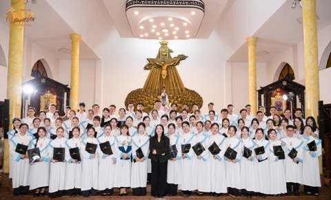

Digital Memory Archive · 2015—2026
TERESA Youth Choir
Nhật ký hành trình và những kỷ niệm
Khám phá hành trình
Hiệp nhấtYêu thươngPhục vụ

Unite · Love · Serve
Chúng mình là ai?
Nơi mỗi giọng ca
trở thành lời nguyện.
Ca đoàn Giới trẻ Têrêsa là mái nhà của những người trẻ yêu thánh nhạc, cùng nhau phục vụ qua tiếng hát và trưởng thành trong tình hiệp nhất.
- Ngày thành lập
- 20.10.2015
- Thánh bổn mạng
- Thánh Têrêsa Hài Đồng Giêsu
- Tôn chỉ
- Hiệp nhất · Yêu thương · Phục vụ
- Lịch sinh hoạt
- Tập hát lúc 19:30 thứ Năm hằng tuầnPhục vụ Thánh lễ lúc 20:00 tối thứ Bảy, các tuần 1, 3 và 5 hằng tháng
- Địa chỉ
- Giáo xứ Thái Hà
Mười hai năm tư liệu — một hành trình
Đi qua thời gian,
giữ lại yêu thương.
Chọn một năm để mở lại những trang nhật ký đã được cùng nhau viết nên.
2015
Khởi đầu một lời caNhững người trẻ đầu tiên
2016
Học cách hòa chungGieo nền nếp phục vụ
2017
Vững vàng trong lời caTrưởng thành qua phục vụ
2018
Bền bỉ một nhịp chungỔn định và trưởng thành
2019
Mở rộng vòng tayPhục vụ và sẻ chia
2020
Gần nhau từ xaGiữ lửa giữa thử thách
2021
Niềm tin không tắtNhững buổi tập trực tuyến
2022
Ngày trở vềGặp lại trong tiếng hát
2023
Rực rỡ thanh xuânNhững dự án mới
2024
Cùng nhau cất bướcLan tỏa niềm vui
2025
Một chương mớiDấu ấn của thế hệ hôm nay
2026
Tiếp nối hành trình hồng ânMột mùa phục vụ mới
Nhịp sống Têrêsa
Phục vụ bằng
niềm vui tuổi trẻ.
Từ cung thánh đến những chuyến đi, mỗi hoạt động là một cách để chúng mình đến gần Chúa và gần nhau hơn.
Khoảnh khắc còn mãi
Một album,
ngàn câu chuyện.
Đang chọn những khoảnh khắc tiêu biểu từ các năm…
Ảnh hoạt động tiêu biểu được tổng hợp tự động từ kho tư liệu 2015–2026.
Cùng viết tiếp hành trình
Bạn có một kỷ niệm
muốn gửi lại?
Hãy gửi hình ảnh, câu chuyện hoặc lời nhắn để kho lưu trữ này ngày một đầy hơn bằng những ký ức thật.
Gửi kỷ niệm ↗